This document explains how crystallographic point groups are used in Mantid.
Point groups can be used to describe the symmetry of an object or a lattice, as commonly used in the context of diffraction techniques. According to the definition given in the International Tables for Crystallography A, a “point group is a group of symmetry operations all of which leave at least one point unmoved” [ITA6]. This means that only symmetry operations without a translational component are allowed, which leaves only rotations  ,
,  ,
,  , 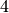,
, 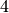,  and roto-inversions
and roto-inversions  ,
,  ,
,  ,
,  and mirror planes
and mirror planes  . In space groups, translational symmetry is present as well (for example in the form of screw axes and glide planes).
. In space groups, translational symmetry is present as well (for example in the form of screw axes and glide planes).
In three dimensions there are 32 crystallographic point groups and in 11 of these an inversion center () is present. These so called Laue classes are important for diffraction experiments because Friedel’s law defines that diffraction patterns always show a center of symmetry if anomalous dispersion is not taken into account.
Through the presence of certain symmetry operations in certain directions, the Laue classes can be categorized into seven crystal systems (see table below). This information is included in the Hermann-Mauguin symbol, which describes symmetry along different directions, depending on the crystal system.
| Crystal system | Laue classes |
|---|---|
| Cubic |  , ,  |
| Hexagonal |  , ,  |
| Trigonal | ,  |
| Tetragonal |  , 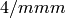 , 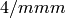 |
| Orthorhombic |  |
| Monoclinic |  |
| Triclinic | |
As mentioned before, point groups can describe the symmetry of a lattice, including the reciprocal lattice. When working with diffraction data, which are often described in terms of reciprocal lattice vectors with their Miller indices  (since it’s a vector it can be written shortly as
(since it’s a vector it can be written shortly as  ), this is particularly useful. Each symmetry operation 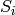 of the point group transforms a vector into a new vector 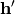:
), this is particularly useful. Each symmetry operation 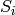 of the point group transforms a vector into a new vector 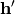:

To describe the rotational and translational components of the symmetry operation, a matrix  and a vector
and a vector  are used. In three dimensions has three elements, so 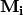 is a
are used. In three dimensions has three elements, so 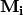 is a  -matrix and the symmetry operation is applied like this:
-matrix and the symmetry operation is applied like this:
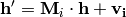
A point group is an ensemble of symmetry operations. The number of operations present in this collection is the so called order  of the corresponding point group. Applying all symmetry operations of a point group to a given vector results in new vectors , some of which may be identical (this depends on the symmetry and also on the vectors, e.g. if one or more index is 0). This means that the symmetry operations of a point group generate a set of 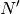 (where
of the corresponding point group. Applying all symmetry operations of a point group to a given vector results in new vectors , some of which may be identical (this depends on the symmetry and also on the vectors, e.g. if one or more index is 0). This means that the symmetry operations of a point group generate a set of 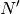 (where  ) non-identical vectors for a given vector - these vectors are called symmetry equivalents.
) non-identical vectors for a given vector - these vectors are called symmetry equivalents.
A very common representation of symmetry operations is the Jones faithful notation, which is very concise and used throughout the International Tables. Some examples of the notation are given in the following table.
| Symbol | Symmetry operation |
|---|---|
| x,y,z | Identity |
| -x,-y,-z | Inversion |
| -x,-y,z | 2-fold rotation around  |
| x,y,-z | Mirror plane perpendicular to |
| -x,-y,z+1/2 |  screw axis along screw axis along |
As explained above, point groups are represented as a collection of symmetry operations, which in turn are described by a -matrix for the rotational part and a  -vector for the translational component.
-vector for the translational component.
Using these identifiers, SymmetryOperation-objects can be created through a factory and then used to transform vectors. The following code sample shows how to do that in Python:
from mantid.geometry import SymmetryOperation, SymmetryOperationFactoryImpl
symOp = SymmetryOperationFactoryImpl.Instance().createSymOp("x,y,-z")
hkl = [1, -1, 3]
hklPrime = symOp.apply(hkl)
print "Mirrored hkl:", hklPrime
The above code will print the mirrored index:
Mirrored hkl: [1,-1,-3]
The corresponding code in C++ looks very similar and usage examples can be found in the code base, mainly in the implementation of PointGroup, which will be the next topic.
Point groups are represented in Mantid by the PointGroup-interface, which is then implemented for each actual point group. The interface consists of two parts, one for providing information about the point group and one for working with -indices. Just as in the case of SymmetryOperation, PointGroup-objects are created using a factory, this time by supplying the short Hermann-Mauguin symbol [1] :
from mantid.geometry import PointGroup, PointGroupFactoryImpl
pg = PointGroupFactoryImpl.Instance().createPointGroup("-1")
print "Name:", pg.getName()
print "Hermann-Mauguin symbol:", pg.getSymbol()
print "Crystal system:", pg.crystalSystem()
When this code is executed, some information about the point group is printed:
Name: -1 (Triclinic)
Hermann-Mauguin symbol: -1
Crystal system: Triclinic
It’s possible to query the factory about available point groups. One option returns a list of all available groups, while another possibility is to get only groups from a certain crystal system:
from mantid.geometry import PointGroup, PointGroupFactoryImpl
print "All point groups:", PointGroupFactoryImpl.Instance().getAllPointGroupSymbols()
print "Cubic point groups:", PointGroupFactoryImpl.Instance().getPointGroupSymbols(PointGroup.CrystalSystem.Cubic)
print "Tetragonal point groups:", PointGroupFactoryImpl.Instance().getPointGroupSymbols(PointGroup.CrystalSystem.Tetragonal)
Which results in the following output:
All point groups: ['-1','-3','-31m','-3m1','112/m','2/m','4/m','4/mmm','6/m','6/mmm','m-3','m-3m','mmm']
Cubic point groups: ['m-3','m-3m']
Tetragonal point groups: ['4/m','4/mmm']
After having obtained a PointGroup-object, it can be used for working with reflection data, more specifically -indices. It’s possible to check whether two reflections are equivalent in a certain point group:
from mantid.geometry import PointGroup, PointGroupFactoryImpl
pg = PointGroupFactoryImpl.Instance().createPointGroup("m-3m")
hkl1 = [2, 0, 0]
hkl2 = [0, 0, -2]
hkl3 = [0, 1, 2]
print "Are [2,0,0] and [0,0,-2] equivalent?", pg.isEquivalent(hkl1, hkl2)
print "Are [2,0,0] and [0,1,2] equivalent?", pg.isEquivalent(hkl1, hkl3)
Are [2,0,0] and [0,0,-2] equivalent? True
Are [2,0,0] and [0,1,2] equivalent? False
Another common task is to find all symmetry equivalents of a reflection, for example to determine its multiplicity. PointGroup has a method for this purpose which returns the set of non-identical symmetry equivalents for a given (including itself):
from mantid.geometry import PointGroup, PointGroupFactoryImpl
pg = PointGroupFactoryImpl.Instance().createPointGroup("m-3m")
hkl1 = [2, 0, 0]
equivalents1 = pg.getEquivalents(hkl1)
print "Number of reflections equivalent to [2,0,0]:", len(equivalents1)
print "Equivalents:", equivalents1
print
hkl2 = [1, 1, 1]
equivalents2 = pg.getEquivalents(hkl2)
print "Number of reflections equivalent to [1,1,1]:", len(equivalents2)
print "Equivalents:", equivalents2
Executing this code results in the following output:
Number of reflections equivalent to [2,0,0]: 6
Equivalents: [[2,0,0], [0,2,0], [0,0,2], [0,0,-2], [0,-2,0], [-2,0,0]]
Number of reflections equivalent to [1,1,1]: 8
Equivalents: [[1,1,1], [1,1,-1], [1,-1,1], [1,-1,-1], [-1,1,1], [-1,1,-1], [-1,-1,1], [-1,-1,-1]]
Sometimes, a list of reflections needs to be reduced to a set of symmetry independent reflections only. That means it should not contain any two reflections that are symmetry equivalents according to the point group symmetry. To achieve this, PointGroup offers a method that returns the same  for all symmetry equivalents.
for all symmetry equivalents.
from mantid.geometry import PointGroup, PointGroupFactoryImpl
pg = PointGroupFactoryImpl.Instance().createPointGroup("m-3m")
hklList = [[1, 0, 0], [0, 1, 0], [-1, 0, 0], # Equivalent to [1,0,0]
[1, 1, 1], [-1, 1, 1], # Equivalent to [1,1,1]
[-3, 1, 1], [1, -3, 1], [-1, 1, 3]] # Equivalent to [3,1,1]
independent = set()
for hkl in hklList:
independent.add(pg.getReflectionFamily(hkl)) # getReflectionFamily returns the same hkl for all symmetry equivalents
print "Number of independent reflections:", len(independent)
print "Reflections:", list(independent)
This example code produces the output below upon execution:
Number of independent reflections: 3
Reflections: [[1,1,1], [1,0,0], [3,1,1]]
Again, as in the case of SymmetryOperation, the usage of PointGroup and the corresponding factory is very similar in C++.
| [ITA6] | International Tables for Crystallography (2006). Vol. A, ch. 10.1, p. 762 |
| [1] | In the case of the monoclinic Laue class it’s a bit more complicated, because there are two conventions regarding the unique axis. According to current crystallographic standards, the  -axis is used, but in some cases one may find the -axis for this purpose. To resolve this, both options are offered in Mantid. When using the symbol 2/m, the -axis convention is used, for one has to explicitly provide the symbol as 112/m. -axis is used, but in some cases one may find the -axis for this purpose. To resolve this, both options are offered in Mantid. When using the symbol 2/m, the -axis convention is used, for one has to explicitly provide the symbol as 112/m. |
Category: Concepts